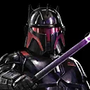

Dark Trooper Moff Gideon
Imperial Remnant Leader that sacrifices his weakest allies to stay alive and controls the battle with insight
Imperial Remnant Leader that sacrifices his weakest allies to stay alive and controls the battle with insight
Deal Physical damage to target enemy. Gain 1 stack of Insight (max 4) until the end of the encounter, and if the target had Daze, Offense Down, or Stagger, Stun them for 1 turn. This attack deals 10% more damage for each debuff on target enemy.
Deal Physical damage to all enemies and remove 10% Turn Meter for each stack of Insight on Dark Trooper Moff Gideon, which can't be evaded. Dark Trooper Moff Gideon loses all stacks of Insight.
Omicron Boost : While in Territory Wars: Deal additional True damage and remove an additional 10% Turn Meter for each stack of Insight on Dark Trooper Moff Gideon. Inflict all enemies with Healing Immunity for 2 turns, which can't be dispelled or resisted.
All allies gain Accuracy Up and Defense Up for 3 turns. Dark Trooper Moff Gideon Taunts for 2 turns, which can't be dispelled or prevented, recovers 30% Health and Protection, and calls target other ally to assist.
If Dark Trooper Moff Gideon is in the leader slot, defeated Imperial Remnant allies are revived with 100% Health and Protection and Stealth for 2 turns. Otherwise, defeated Dark Side Mandalorian allies are revived with 30% Health and Protection and gain Retribution for 2 turns.
Non-Droid Imperial Remnant allies have +75% Critical Chance, Critical Damage, Defense, and Offense.
If all allies were Imperial Remnant at the start of battle:
- Whenever an ally gains or loses Turn Meter or a bonus turn, they recover that much Health and Protection.
- Whenever an enemy gains bonus Turn Meter or a bonus turn, they lose 10% Defense, Offense, and Turn Meter until the end of their next turn.
- Whenever Dark Trooper Moff Gideon uses a Special ability, all allies gain 10% Defense and Offense (stacking) until the end of the encounter.
- Whenever Dark Trooper Moff Gideon takes a turn, he and all allied Moff Gideons gain 1 stack of Insight until the end of the encounter.
- The first time each other ally is defeated each encounter, Dark Trooper Moff Gideon gains 100% Turn Meter.
Insight: Characters gain additional effects and abilities based on the number of stacks.
Omicron Boost : While in Territory Wars: Non-Droid Imperial Remnant allies have +75% Health and Mastery and +30 Speed. Whenever an Imperial Remnant ally Taunts, dispel all debuffs from all allies and all buffs from all enemies. Whenever an Imperial Remnant ally is revived, grant them a bonus turn.
Dark Trooper Moff Gideon has +100% Critical Avoidance, +50% Defense, and +30% Max Health and Max Protection. At the end of his turn, he recovers 30% Protection. Whenever Dark Trooper Moff Gideon would be defeated, if he has 4 or more stacks of Insight, he recovers 100% Health, loses all stacks of Insight, and the weakest non-Galactic Legend ally is defeated instead.
If the allied Leader is a Dark Side Mandalorian:
- Dark Trooper Moff Gideon gains 25% Offense.
- Dark Side Mandalorian allies recover 20% Protection at the end of their turn.
Omicron Boost : While in Territory Wars: Dark Trooper Moff Gideon gains an additional 30% Max Protection and recovers 100% Protection on his first turn. He begins the battle with Taunt for 2 turns, which can't be dispelled or prevented, and 4 stacks of Insight. Whenever he receives damage, he gains a stack of Insight (Max 4) until the end of the encounter.